God Of Crabs
Welcome to [CORP]! Where Productivity is Mandatory, and Corporate Enrichment is... strongly encouraged!
A narrative walking simulator set in an isolated bunker, where repetition, uncertainty and environmental storytelling reveal a darker purpose behind the protagonist's daily routine.
Project Overview
God of Crabs is a narrative walking simulator set inside an isolated corporate bunker. The player takes on a repetitive daily routine without initially understanding why these tasks matter or what will happen if they fail to complete them.
The project used repetition, environmental details, scripted sequences and sound to gradually build an unsettling picture of the world beyond the protagonist's immediate routine.
Project Gallery
A selection of screenshots showing the bunker environment, narrative moments and systems I worked on during development.
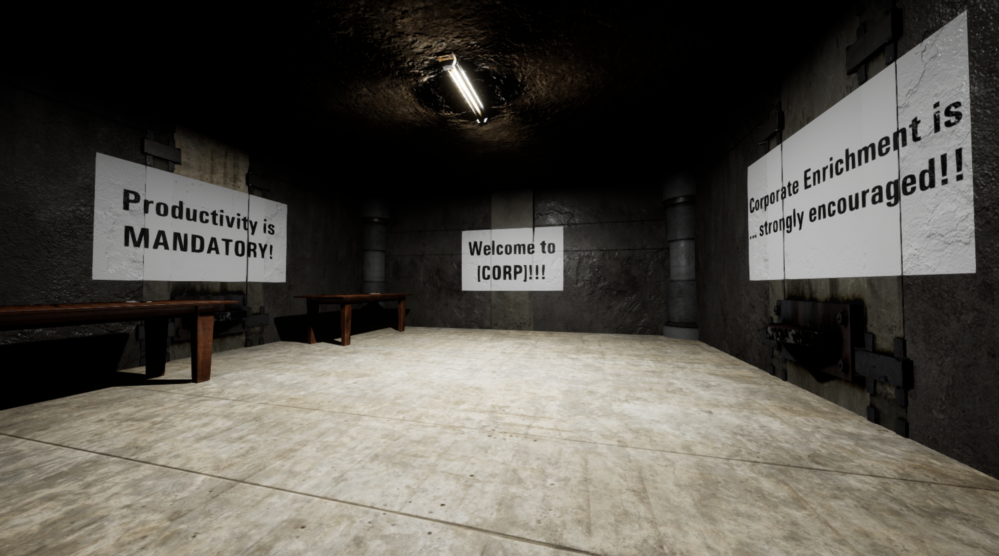
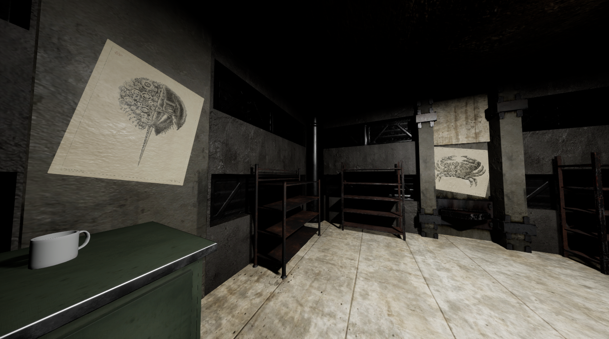
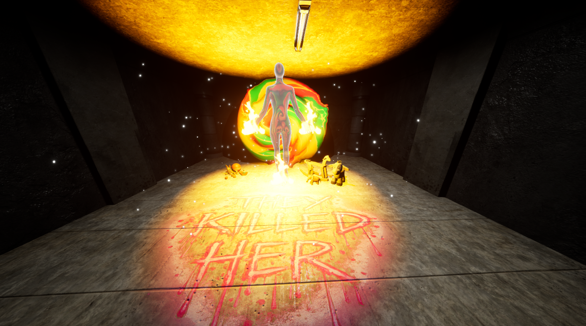
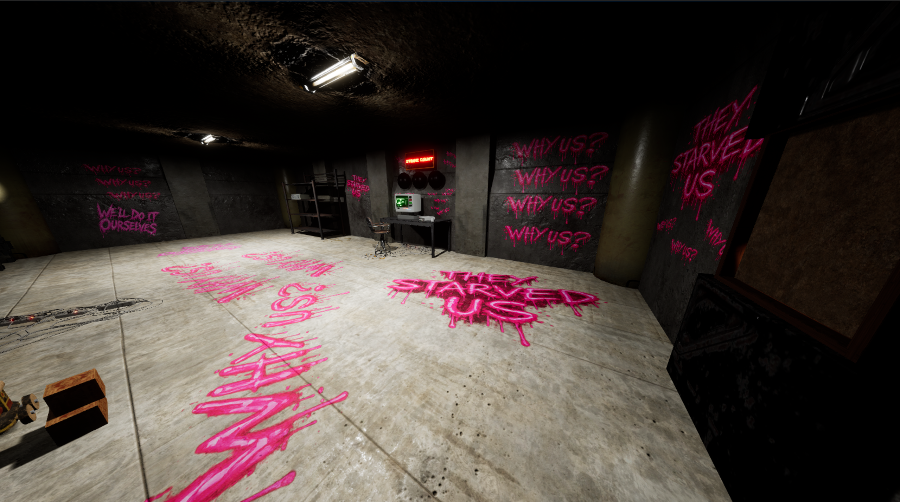
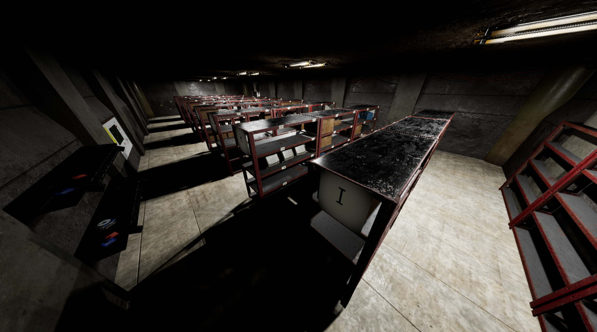
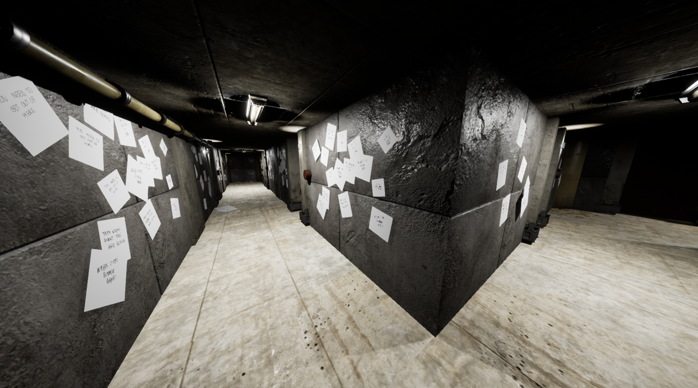
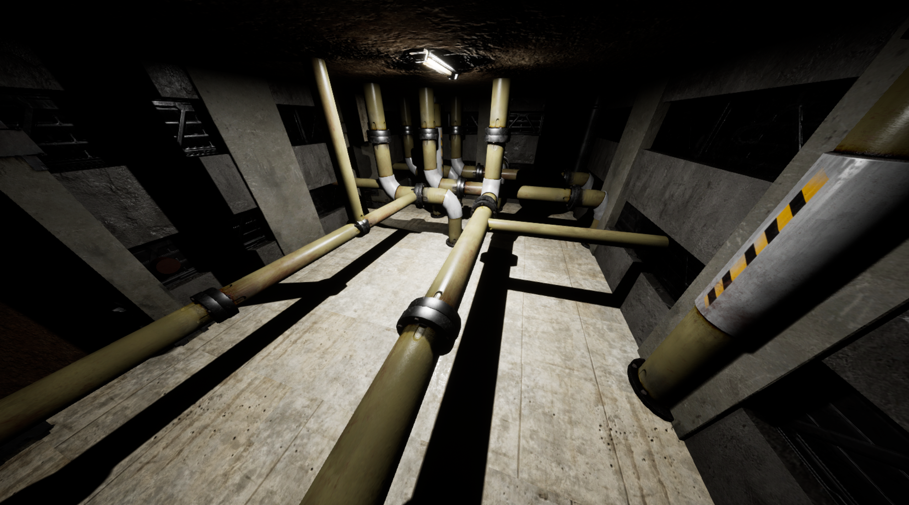
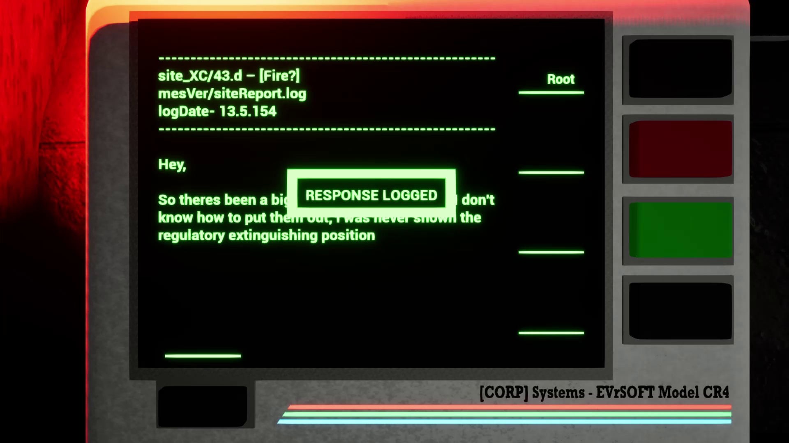
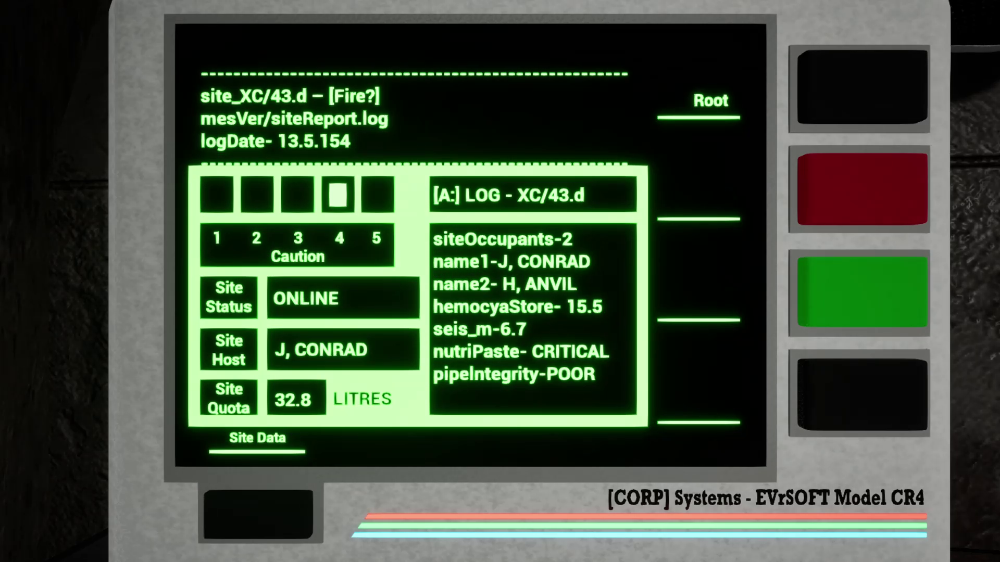
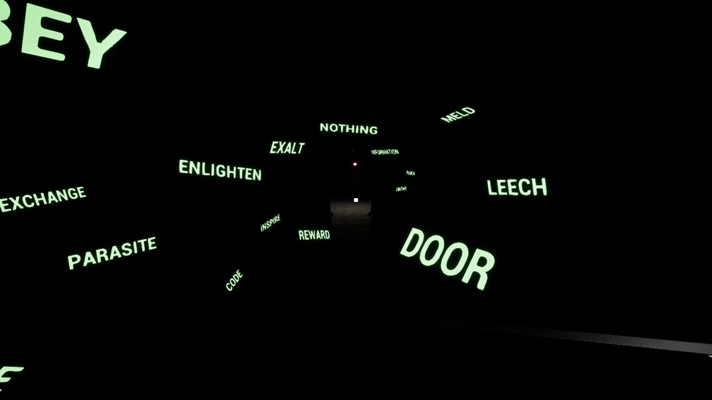
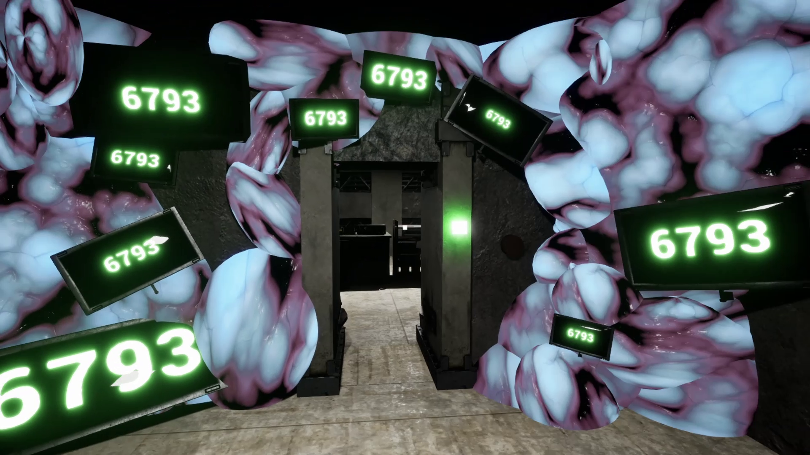
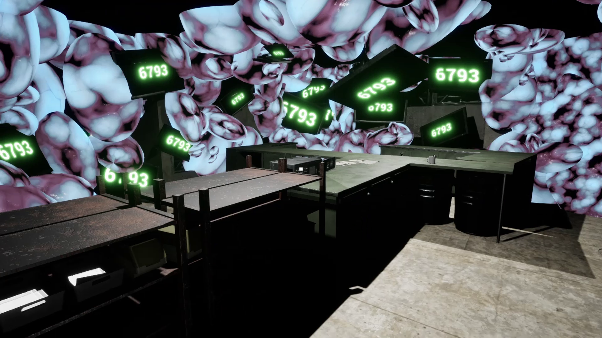
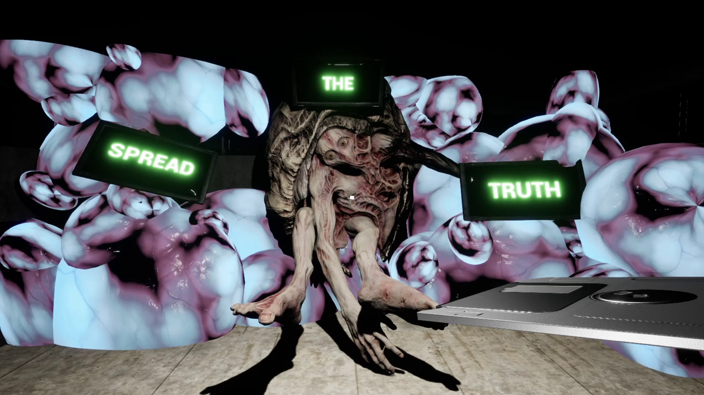
Environmental Storytelling
One of my contributions to God of Crabs was developing the environmental storytelling of the bunker. Rather than relying entirely on direct exposition, the environment was used to give the player clues about the world and the protagonist's situation.
The bunker was designed around the idea of routine and repetition. Everyday objects, workplace spaces and environmental details could gradually become more unsettling as the player began to question why they were there and what the organisation was actually doing.
Blueprints & Cutscenes
I also worked with Unreal Engine Blueprints to create and implement elements of the game's scripted cutscenes.
This gave me experience working with Unreal's visual scripting tools and with coordinating narrative moments alongside player movement, environmental changes and other gameplay events.
Sound Design
Sound was another part of my contribution to the project. I worked on sound effects that helped reinforce the bunker environment and its atmosphere.
The combination of environmental detail and sound was particularly important to the game's tone. Mundane spaces and repetitive tasks could become increasingly uncomfortable when paired with the right audio cues.
Working in a Team
God of Crabs was developed as a small collaborative project which meant that narrative, level design, technical implementation and audio all had to work together closely.
Working across these different areas gave me a better understanding of how dependent individual contributions can be on the work of other team members, particularly when building scripted narrative sequences.
Production & Problem Solving
The project also taught me that development rarely follows the original plan. Changes to scope, implementation and team priorities meant that I had to adapt my work as the project developed.
Rather than treating this purely as a setback, the experience helped me understand the importance of communicating dependencies keeping individual tasks manageable and finding practical ways to contribute when the wider project changes direction.
Reflection
God of Crabs gave me experience working in Unreal Engine as part of a small development team, while also allowing me to explore how narrative can be communicated through spaces, scripted events and sound rather than dialogue alone.
The project strengthened my interest in environmental storytelling and showed me how technical implementation can directly support narrative design. It also gave me useful experience with Unreal Blueprints and the practical challenges of collaborating across different areas of development.